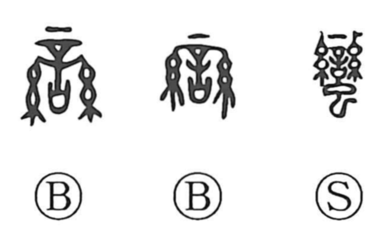

蛮

Kun: | On: ban
barbarian ・ savage ・ wild ・ uncivilized
Explanation
蛮, formerly 蠻, contains the sound element 䜌 above 虫. The older 䜌 depicts a vessel holding an oath to the gods, adorned on either side with threads. Bronze inscriptions already use this graph alone to name peoples outside the central Chinese states. That use is a borrowing for the sound of their name.
虫 was added later because southern peoples were imagined as belonging to a serpent lineage. The completed 蠻 reflects that ancient view of the peoples to the south. From this outsider designation developed uses meaning rough, forceful, or uncultivated. These later judgements belong to the attitudes carried by the name, while its original written form came from the sound loan.